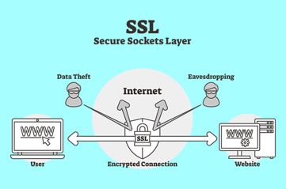
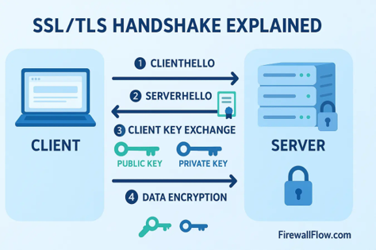

La sicurezza nei trasferimenti dati: Protocolli SSL e TLS
Nello studio di Sistemi e Reti, l'integrazione tra l'apprendimento teorico è stata fondamentale per comprendere a fondo le architetture di rete. Tra i vari temi trattati, la protezione dei dati in rete costituita dai protocolli crittografici SSL e TLS ha suscitato in me un interesse particolare: mi ha infatti permesso di analizzare dal punto di vista tecnico e approfondire uno strumento informatico fondamentale nell'uso quotidiano.
Il contesto tecnologico: dalla navigazione in chiaro alla cifratura
In passato, le comunicazioni sul web avvenivano tramite il protocollo HTTP, che trasmetteva i dati interamente in chiaro ed esponeva gli utenti al costante rischio di intercettazione di informazioni sensibili, come password e dati finanziari. Per risolvere questa vulnerabilità, è stata introdotta la cifratura end-to-end, un sistema capace di proteggere e rendere riservati i dati durante tutto il percorso dal browser al server.
L'evoluzione dai protocolli SSL al moderno standard TLS
- SSL (Secure Sockets Layer): Introdotto negli anni '90 da Netscape, ha dato il via alla sicurezza del commercio online. A causa di gravi falle strutturali (attacchi POODLE e BEAST), è stato dichiarato obsoleto e abbandonato ufficialmente nel 2015.

- TLS (Transport Layer Security): Sviluppato dall'IETF come evoluzione matura e standardizzata. Oggi vede una diffusione capillare di TLS 1.2 e l'adozione raccomandata di TLS 1.3, che ottimizza sia la sicurezza che le prestazioni.
I tre pilastri della sicurezza informatica garantiti da TLS
- Riservatezza (Cifratura): I dati in transito vengono trasformati in un codice illeggibile intercettabile ma non decodificabile senza le specifiche chiavi matematiche.
- Integrità dei dati: Garantisce che il messaggio arrivi a destinazione esattamente come è stato spedito. Se viene modificato anche un solo bit, il protocollo interrompe la connessione.
- Autenticazione univoca: Certifica l'identità del server remoto tramite i certificati digitali emessi dalle Autorità di Certificazione (CA), impedendo il phishing.

Il meccanismo di Handshake TLS
La sessione si apre con l'handshake (stretta di mano), un dialogo invisibile in cui client e server stabiliscono la versione comune del protocollo, verificano l'autenticità del certificato digitale tramite la Trust Chain e concordano la chiave simmetrica temporanea per cifrare i dati. Con TLS 1.3 l'intero scambio richiede un unico ciclo di andata e ritorno (1-RTT).
